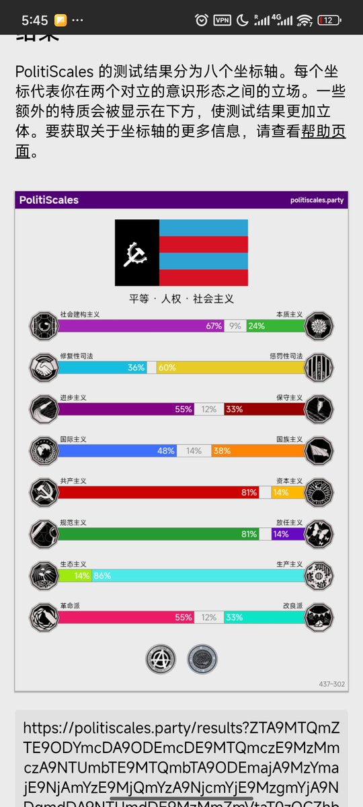
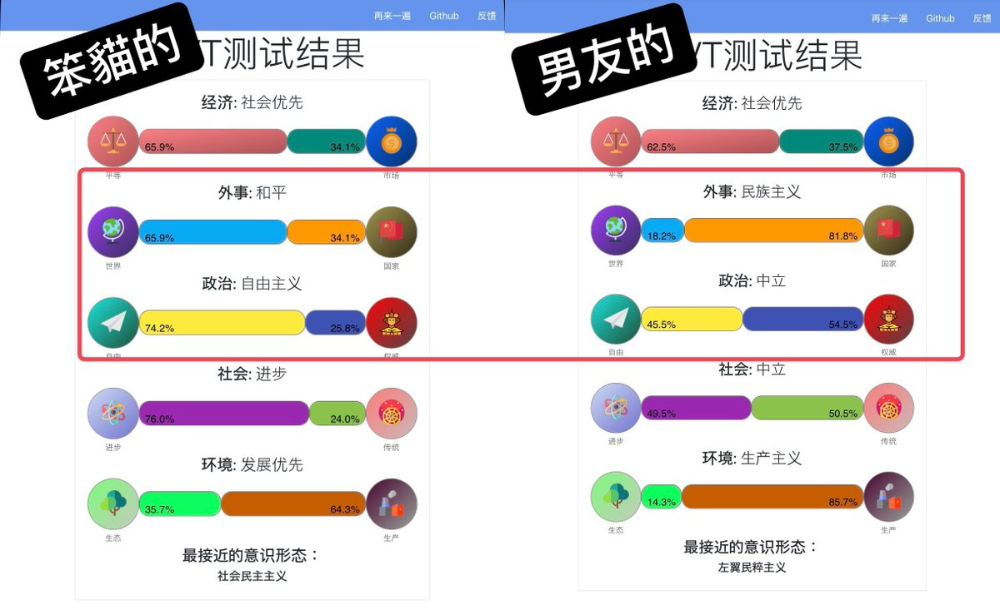
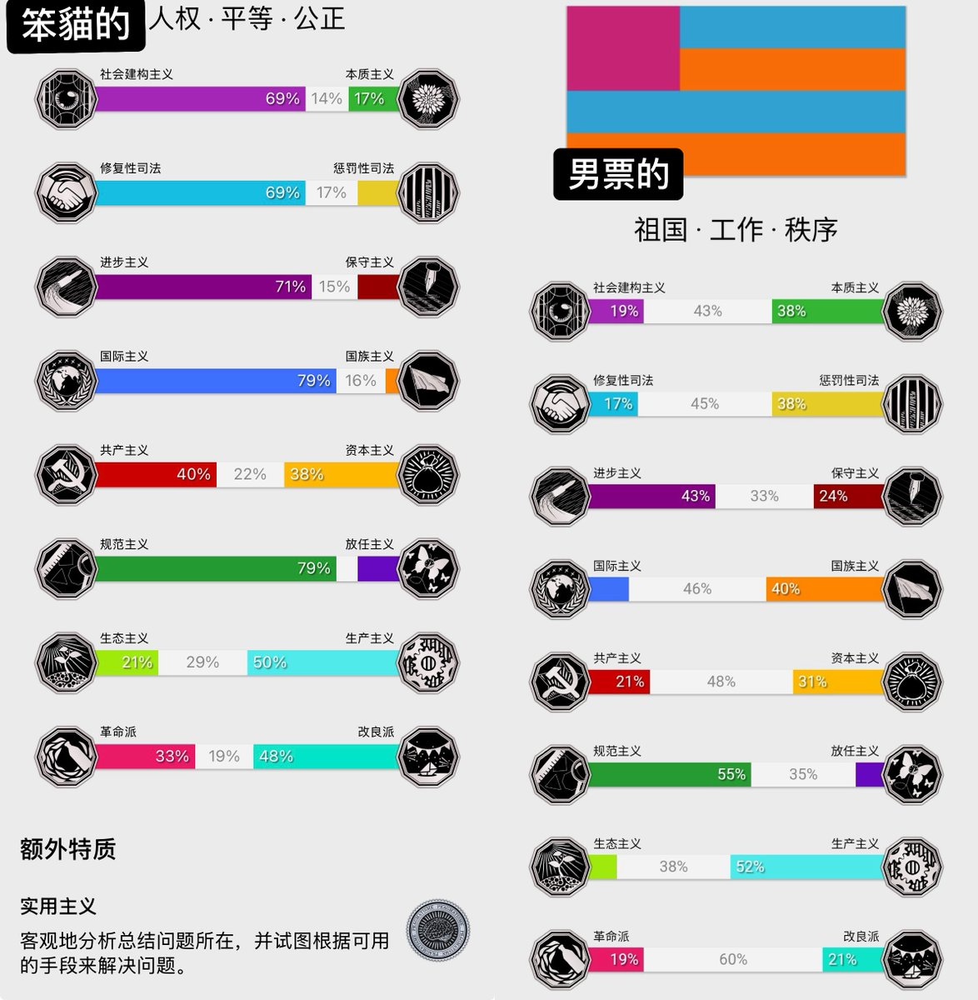

秋分与猫🍔 & 鲜虾🍤鱼板🍥面🍜～
@AsdQWD358224
@ServalCandle 🤔



🌸猫宮すみか🎀🎍
@ServalCandle
我觉得这种小测试更多的能反映出来人的一部分世界观（（（
就带着男朋友做了一下
结果变成了…
社会民主主义笨蛋猫娘和她的左翼民粹男友_(:з」∠)_
有两项是相反的
笨猫是国际主义
男票是民族主义
然后笨猫偏向自由主义
男票偏向权威主义
最后给笨猫的tag是人权平等公正
给男票的是祖国工作秩序 https://t.co/DygjLQCr5T